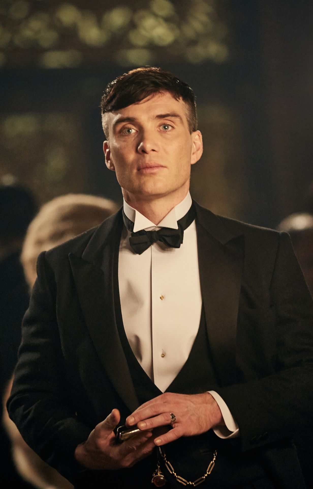

Thomas Shelby
RÉSUMÉ
"The one minute. The soldier’s minute. In a battle, that’s all you get. One minute of everything at once. And anything before is nothing. Everything after, nothing. Nothing in comparison to that one minute."
is the leader of the Birmingham criminal gang, the Peaky Blinders and the patriarch of the Shelby Family.
Character History
-
BACKGROUND
Thomas Shelby and his siblings are Gypsies from both sides of their family. It is implied by their aunt, Polly, who is their father's sister and Thomas himself when he states in Series 1 that the Lee Family are kin to the Shelby family from their mother's side. It can be concluded that perhaps both of Thomas' parents are partially Romani Gypsies. Thomas was in love with a girl named Greta Jurossi before the First World War, as stated by Jessie Eden. Gretta grew sick, and Thomas stayed by her bedside for three months before she passed away and he went to war. It is implied that there was a drastic personality shift before and after his experiences in the First World War, during which he was a Tunneller or Sapper (a volunteer digging treacherous tunnels covertly, in order to place enormous amount of explosives beneath enemy lines, a tactic used several times in the war to devastating effect). After the War, he began experiencing symptoms of post-traumatic stress disorder. Peaky Tommy Shelby Thomas in 1919. Thomas Shelby is shown to be a member of the Small Heath Rifles at the rank of sergeant major – a non-commissioned officer in charge of well-being, morale and training of the entire unit (all other sergeants and corporals answer to him as well as to the actual commanding officers). His flawless conduct in this role (made even more difficult on account of his youth at the time) earned him unwavering respect both from members of his unit and other veterans alike and cemented his reputation in the streets. As to his heritage, Thomas claims that he is related to the Lee family on his mother's side and Johnny Dogs claims that Thomas's grandfather was a "king", most likely a King of the Gypsies. He is the second of the Shelby siblings. -
WORLD WAR ONE
Thomas Shelby is a former British soldier and his war record states that he fought bravely at the Battle of Verdun and the Battle of Somme. His actions at Mons reportedly saved thousands of allied lives, for which he received medals of honour after the War, including the Military Medal and the Distinguished Conduct Medal. -
Shelby Company Limited
Thomas is instrumental in the success of the Shelby family business, which became a Limited Company under Thomas's ownership, as well as the first Shelby family company to have a legal racetrack pitch. Series 2 revealed that Shelby Company Limited is making over 100 pounds a day, on average. Thomas pushes the company further by expanding it south to London, as well as by sending crates of cars (with hidden bottles of single malt Scotch Whisky inside—these bottles are then sold in North America in order to bring in profits for the company). In Series 3, it is shown that thanks to the actions of Thomas and the family over the past few years, the company is even more successful than it had been in the previous series, as it continues to expand and grow, as well as thanks to the cash provided by Winston Churchill. -
Personality
Unlike the Shelby siblings, Thomas is a very calm and observant man, showcasing his wit and ruthlessness to anyone who threatens him or his family. He is widely respected among his local community and is seen as a dangerous foe by his enemies. Under his leadership, the Peaky Blinders have risen from a local Birmingham street gang to a national enterprise that has gone toe-to-toe with the New York Mafia.
Languages
Skills
Character
Likes
Wants
Military service
-
SERVICEBritish Army
-
YEARS OF SERVICE1914-1918
-
UNIT179th Tunnelling Company
-
BATTLESMons, The Somme, Verdun